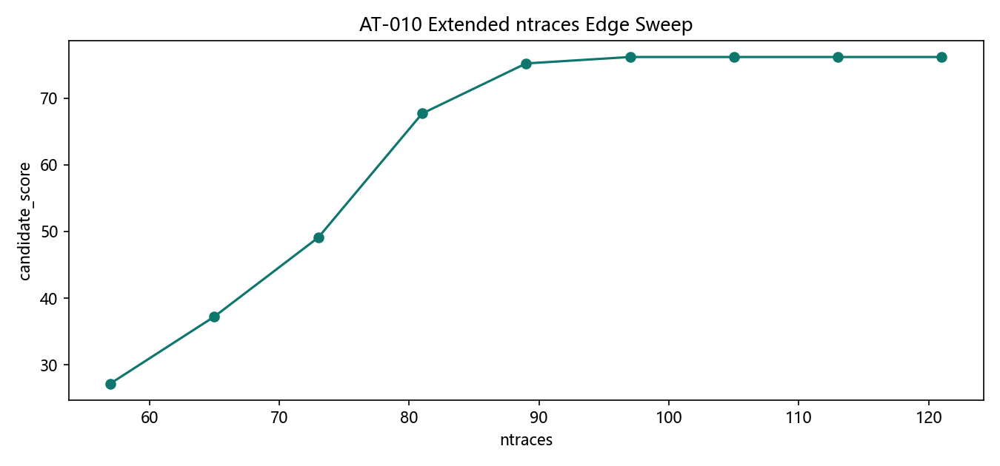
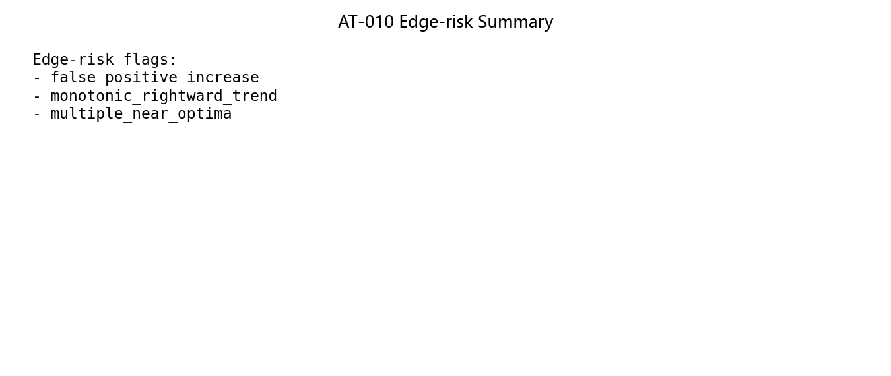
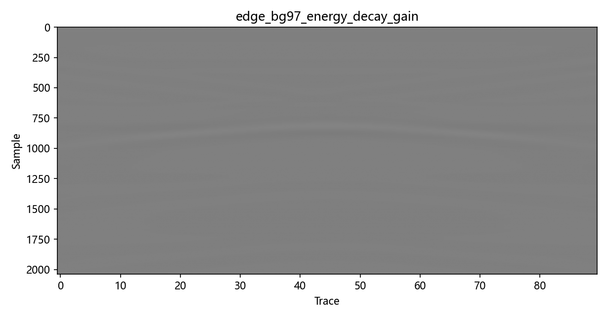
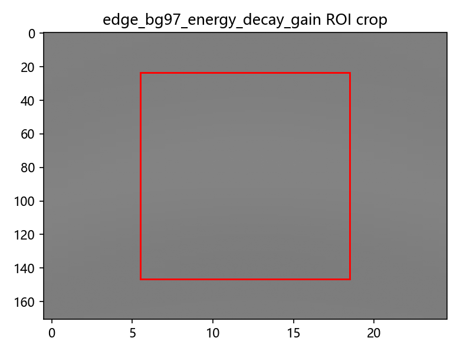

AT-010 Background ntraces Edge Check
Source commit:
2ed606e7f4ec26bff24cfb2980479f6dc96573dcDataset: pipe_demo_longline_v1 [2037, 90]
Zero-time policy:
excludedDewow policy:
excluded_primaryExtended domain:
[57, 65, 73, 81, 89, 97, 105, 113, 121]
Decision:
not_ready_edge_limited |
best ntraces=97 |
recommended range=89-121 |
73 supported=False |
flags=false_positive_increase, monotonic_rightward_trend, multiple_near_optima





Known risks
- Single native gprMax scene cannot establish broad preset generalization.
- Edge-check may still be domain-limited without wider scenario coverage.
- Dewow remains excluded only for this primary lane policy.